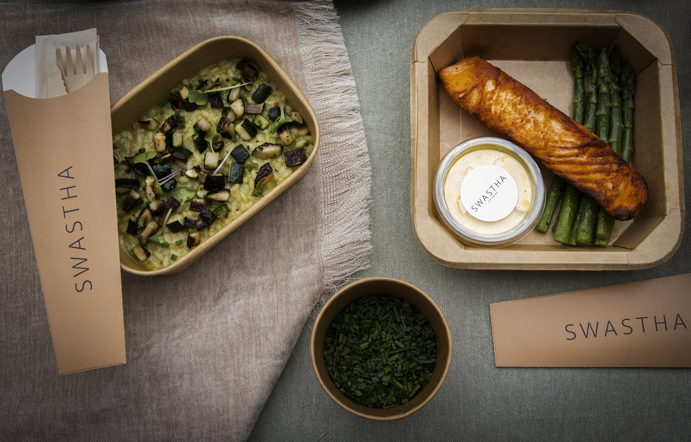

In most Belgrade offices lunch is solved thirty separate times a day. Everyone opens a delivery app, orders something different, pays separately, waits a different amount of time and eats at their desk whenever the courier finds the building. Nobody planned it, and nobody would design it that way on purpose. A daily hot meal for employees replaces all of that with one decision made once: the company agrees on a menu and a schedule, and a proper lunch arrives every working day without anyone having to think about it.
What a Daily Hot Meal Actually Includes
The format that works best for a working day is simple and has been around for a reason: a soup or potage, a main course and a salad, packed together as one meal per person. The soup is warm and light enough to start with even on a busy day. The main course carries the protein and the energy for the afternoon. The salad brings the vegetables most people skip when they order for themselves. Three parts, one package, nothing to assemble and nothing to wash up afterwards.
Cooked the Same Morning, Not the Day Before
The single biggest difference between daily catering services is when the food is cooked. A meal cooked the previous afternoon, chilled and reheated, can be perfectly safe and still taste tired. A meal cooked and packed the same morning tastes like lunch. When a company searches for cooked meals for the office, this is what they are really asking for, and it is worth asking any caterer directly: what time is today's lunch cooked, and how long does it travel before it reaches us?
How Ordering Works, From the First Call to a Daily Routine
Starting is quicker than most companies expect. You tell us how many people you are, roughly what the team likes and any dietary requirements, and within 24 hours you get a menu and a proposal. Delivery starts at 10 meals per order, so the service suits a small team as well as a full floor. After that, the only daily task is the headcount: the number of people in the office tomorrow, confirmed by an agreed time. Everything else, the menu, the delivery window and the packaging, is agreed once and simply happens.

A Weekly Menu, Not the Same Five Dishes
A daily service lives or dies on variety. The same five dishes on rotation will be tolerated for a month and resented after that. A good weekly menu changes with the season, balances meat, fish and vegetarian days, and is sent in advance so people know what is coming. Dietary needs are handled per person, not per office: a colleague who does not eat gluten or eats only plant based food should get a labelled meal of their own, not a plate with things picked off it. We cover this in more detail in our guides to allergies and special diets and vegetarian and vegan menus.
Not Only for Offices: Catering for Workers on Their Feet
Warehouses, workshops, production halls and building sites need a daily meal at least as much as an office does, and the requirements are different. Portions are larger because the work is physical. The delivery has to land on the shift break, not around lunchtime in general, because a crew with thirty minutes cannot wait twenty of them for a van. The packaging has to keep food warm in a place with no kitchen and often no table. Catering for workers is the same service with different numbers, and it should be planned around the shift schedule rather than the office clock.
"The best lunch arrangement is the one nobody in the office has to think about after the first week."
What It Costs and What It Replaces
A daily meal is priced per person, and the price depends on the menu, the number of meals and the delivery location. The honest comparison is not with the cheapest lunch in the neighbourhood but with what the company and the team already spend: individual delivery orders, the time lost waiting for them, and the afternoon that follows a bad one. Many employers in Serbia already pay a meal allowance as part of the salary, and some choose to provide the meal itself instead or alongside it; how that is structured is a question for your accountant. For a breakdown of what goes into a price per head, see our article on what corporate catering actually costs.
Why It Changes the Afternoon
The reason companies keep a daily meal service is rarely the food itself. It is what happens between two and five. A balanced lunch, eaten at a regular time, keeps energy steady through the afternoon, while a heavy delivery meal eaten late at the desk produces exactly the slump everyone recognises. We explained the mechanism in our piece on the afternoon energy crash. A daily meal is the simplest way to make the good version the default.
Five Questions to Ask a Daily Catering Partner
Before you commit, ask: when is the food cooked, and how far does it travel? What is the deadline for changing tomorrow's headcount? How are allergens and special diets labelled? Is the weekly menu sent in advance, and how often does it repeat? What happens when a delivery is late? A partner with clear answers to those five will be reliable on an ordinary Tuesday, which is the only day that matters for a daily service. Our guide to choosing a catering partner goes through the rest.
The Bottom Line
A daily hot meal for employees turns lunch from thirty separate problems into one arrangement: soup, a main course and a salad, cooked the same morning and delivered on schedule. Tell us how many you are and what you like, and we will come back within 24 hours with a menu and a proposal. You can see the full format on our corporate catering page.